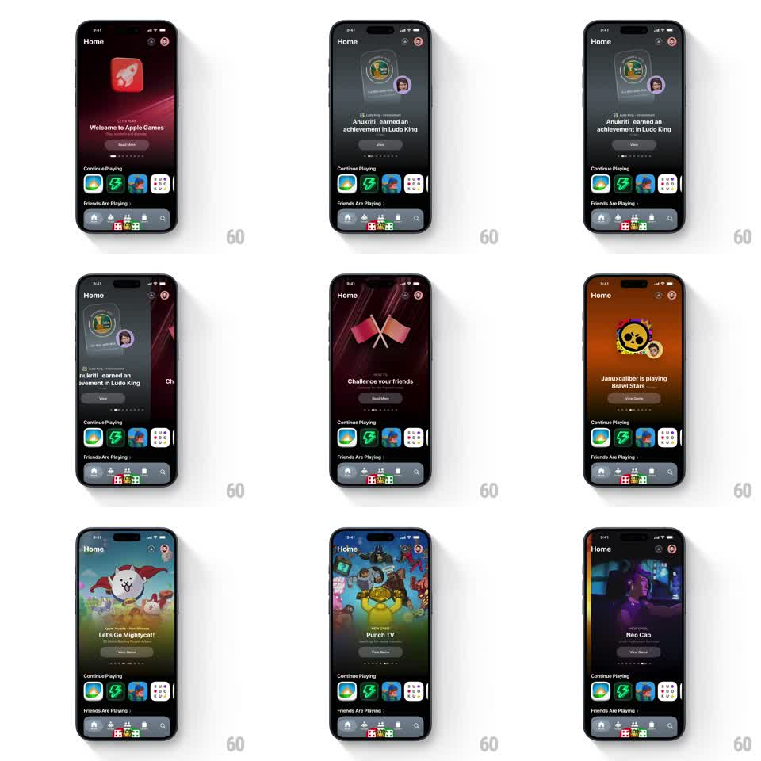

Media
Frame-by-frame

Rebuild this interaction 1:1: Apple Games home header - a full-width feature carousel where swiping between cards crossfades the ENTIRE screen background to a color pulled from each card's artwork, with springy snap physics and a page indicator.

Rebuild this interaction 1:1: Apple Games home header - a full-width feature carousel where swiping between cards crossfades the ENTIRE screen background to a color pulled from each card's artwork, with springy snap physics and a page indicator. ## Integration Integration: stack-agnostic spec - springs given as stiffness/damping, timed motions as duration + curve; map every value to your framework and animation library of choice. ## Scene Dark "Home" screen: large feature card (game artwork, category label, title, CTA button) filling the upper 2/3, "Continue Playing" row + "Friends Are Playing" below, tab bar. The screen's background tint is a blurred extension of the current card's art. ## Motion spec Pattern: gesture-driven carousel with ambient color sync. - Swipe: card tracks the finger 1:1 with slight rubber-band at edges (0.6x past bounds). - Release: snap to nearest card (spring ~280/24, ~350ms settle); adjacent cards peek ~8% from screen edges during the drag. - Background: as the card position crosses 50% between pages, the backdrop color crossfades (400ms, linear) to the incoming card's dominant color, sampled live during the drag (interpolate between both colors by drag progress). - Page indicator dots: active dot stretches into a pill (width animates with drag progress, not after). - Card content (art, title) parallaxes slightly: art moves at 0.9x card speed. ## Calibration - The color crossfade is the star - it must track the drag continuously, not trigger after the snap. - Snap is firm and quiet; one settle, no bounce. ## Reduced motion Cards snap on release without tracking; background swaps with a 200ms fade after settle. ## Don't miss - Background tint reaches the tab bar - the whole screen commits to the color. - The active dot's stretch is progress-driven, not a post-snap animation.